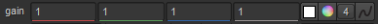

In the Properties panels, there are usually four extra controls to the right of a control including color swatch, color picker, channel selector and the animation menu. The first three are color controls. For more information about using the animation menu, see Animating Parameters.
You can use the color swatch button to activate the eye dropper tool. You can copy a color from one swatch to another by dragging and dropping the color swatch with the color you want to use over the color swatch you want to replace.
The color picker button can be used to display and make color selections. Depending on the settings in the Preferences dialog, you may use an in-panel color picker, or a floating color-picker window. (See Appendix A: Preferences for more information.)
You can use the channel selector to toggle between the slider and manually enter values for each of the channels.
You can use the color swatch to sample a color from the Viewer, by doing the following:
| 1. | Click the color swatch to activate the eye dropper tool. |
| 2. | Move the cursor over the Viewer, over the color you want to sample. |
You can zoom in and pan as necessary until the area you want to sample is clear.
| 3. | Ctrl/Cmd+click to sample a color value, or Ctrl/Cmd+Alt+click to sample a color from the node's input while viewing its output. |
You can sample a region instead of just a single pixel by also pressing Shift+drag when you're sampling the color. When sampling a region, Nuke calculates the average color of the region.
If you are not happy with the pixel or region you've sample, you can simply repeat the sample procedure until you are happy with the selected pixel or region.
TIP: You can discard sampled pixels by Ctrl/Cmd+right-clicking in the Viewer.
| 4. | When you are happy with the color sample, click the color swatch again. This closes the eye dropper tool and now displays your selected sample. |
If your Preferences > Panels > Control Panels > Color Panel > color picker button opens dropdown is set to in-panel color picker, you can display the color sliders and wheel within the Properties panel by clicking the color picker button  . You can have multiple in-pane color pickers open simultaneously.
. You can have multiple in-pane color pickers open simultaneously.

TIP: Holding Ctrl/Cmd and clicking the color picker button opens the alternate color picker to the one specified in the Preferences dialog.
You can adjust the hue by dragging the marker on the edge of the color wheel (or the marker inside the wheel) around to the required hue. You can adjust the saturation by dragging the marker inside the wheel in or out to the required saturation.
TIP: You can also Ctrl/Cmd+click on the color wheel to only affect the hue, and Shift+click to only affect the saturation.
To adjust the value (brightness) of the color, hold down Ctrl/Cmd+Shift and drag right or left.
By default, the color wheel uses relative cursor positioning. This means the cursor position can be offset from the marker position, which allows for very fine adjustments. You can disable this behavior and use absolute cursor positioning by holding Alt while moving the markers.
NOTE: If any red, green, or blue values are higher than 1, the marker inside the wheel turns red. If the red, green, and blue channels all have a value of less than 0.1, the marker turns blue. If at least one channel is negative and at least one is positive, the hue indicator turns red.
To increment the value by 0.01, left-click on the arrow button . To decrement the value by 0.01, right-click on the arrow button. Use Shift+click for 0.1, and Alt+click for 0.001.
You can also click and drag right or left on the button to scrub the value up or down. Use Shift+drag to scrub quickly, or Alt+drag to scrub slowly.
If your Preferences > Panels > Control Panels > Color Panel > color picker button opens dropdown is set to floating color picker, you can display color sliders and wheel in a floating window by clicking the color picker button  .
.
TIP: Holding Ctrl/Cmd and clicking the color picker button opens the alternate color picker to the one specified in the Preferences dialog.
You can change the floating window to be horizontal by dragging on one of the corners of the window to resize it. When it is wide enough, the sliders automatically become horizontal.

• From the TMI, HSV, and RGB buttons, you can select which slider you want to display.
• There are three states of the color wheel: hide color wheel, show color wheel, and show color wheel with square. You can cycle through these states by simply clicking on the color wheel button multiple times.
• You can choose to show the color swatches by clicking the color swatch button.
• If you want the background of the sliders to show what the value of the color would be if the sliders were set to the current position, click the Dyn button.
Using the color wheel in the floating window is exactly the same as using the in-panel color wheel; drag the marker on the edge of the wheel to adjust the hue, and drag the marker inside the wheel to adjust the saturation.
However, you can also pan and zoom on the color wheel in the floating window:
• To pan, press Alt and drag the cursor over the color wheel.
• To zoom, press Alt and drag left or right with the middle-mouse button.
• You can reset the zoom and/or pan by simply middle-clicking on the color wheel.
Using the sliders in the floating color window is exactly the same as using the in-panel sliders.
When you're happy with a color, you can save it by right-clicking on the swatch where you want to save it. This replaces the original swatch that was there. You can also drag and drop a color you want to save on any of the swatches to replace it.
The rectangle above the sliders shows the original color on the right, the currently selected color on the left. When you hover the cursor over this, an arrow appears allowing you to copy one to the other by clicking once on the rectangle.

You can open multiple color picker floating windows, by pressing Ctrl/Cmd+Alt+click on another parameter's color picker button.
By default, many parameters in Nuke automatically group channels for you. For example, if you drag on the gain slider in the ColorCorrect node, you simultaneously affect the R, G, and B channels (assuming you're processing the RGB layer.) You can use the channel selector button  to display and edit the individual channel values. The number displayed on the channel selector button represents the number of available channels for editing.
to display and edit the individual channel values. The number displayed on the channel selector button represents the number of available channels for editing.
You can edit an individual channel's value by doing the following:
| 1. | Click the channel selector button. |
The available channels appear with value fields for each. For example, when you press the gain - channel selector button, four channel value fields appear (R,G,B, and A) as the channel selector shows that there are four available channels for editing.

| 2. | Enter the required values in the channel value fields. |
After you are happy with the values, simply click the channel selector button again to close and save your settings.
|
Slider |
Function |
|
The red slider (R) |
This allows you to control the red channel's value (or the first channel in a layer if you are processing another layer besides RGBA). |
|
The green slider (G) |
This allows you to control the green channel's value (or the second channel in a layer if you are processing another layer besides RGBA). |
|
The blue slider (B) |
This allows you to control the blue channel's value (or the third channel in a layer if you are processing another layer besides RGBA). |
|
The alpha slider (A) |
This allows you to control the alpha channel's value (or the fourth channel in a layer if you are processing another layer besides RGBA). |
|
Slider |
Function |
|
The temperature slider (T) |
This allows you to control apparent color temperature by inversely affecting red and blue values (assuming you are processing the RGBA layer). |
|
The magenta/green slider (M) |
This allows you to control the mix of green and magenta hues. To add more magenta (increase the red and blue channels' values, while decreasing the green channel's), drag up. To add more green (increase the green channel's value, while decreasing the red and blue channels'), drag down. |
|
The intensity slider (I) |
This allows you to simultaneously control the red, green, and blue channel values. To increase the value of all channels by the same amount, drag up. To decrease the value of all channels by the same amount, drag down. |
|
Slider |
Function |
|
The hue slider (H) |
This allows you to control the color's location on the traditional color wheel (for example, whether the color is red, yellow, or violet). |
|
The saturation slider (S) |
This allows you to control the intensity or purity of the color. |
|
The value slider (V) |
This allows you to control the brightness of the color (the maximum of red, green, and blue values). |
NOTE: The HSV sliders are only available in the floating color picker window. In the in-panel color picker, you can use the color wheel to adjust hue, saturation, and value.
|
|